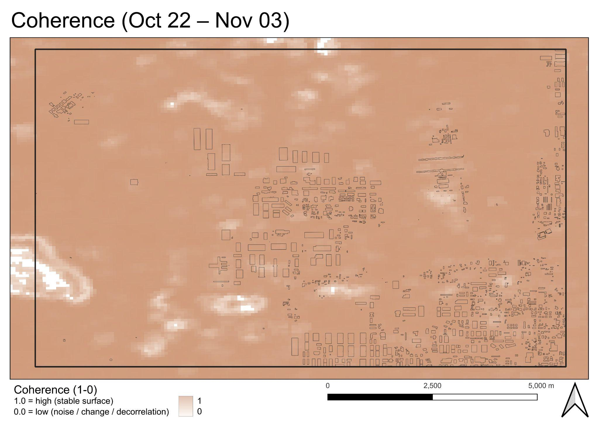
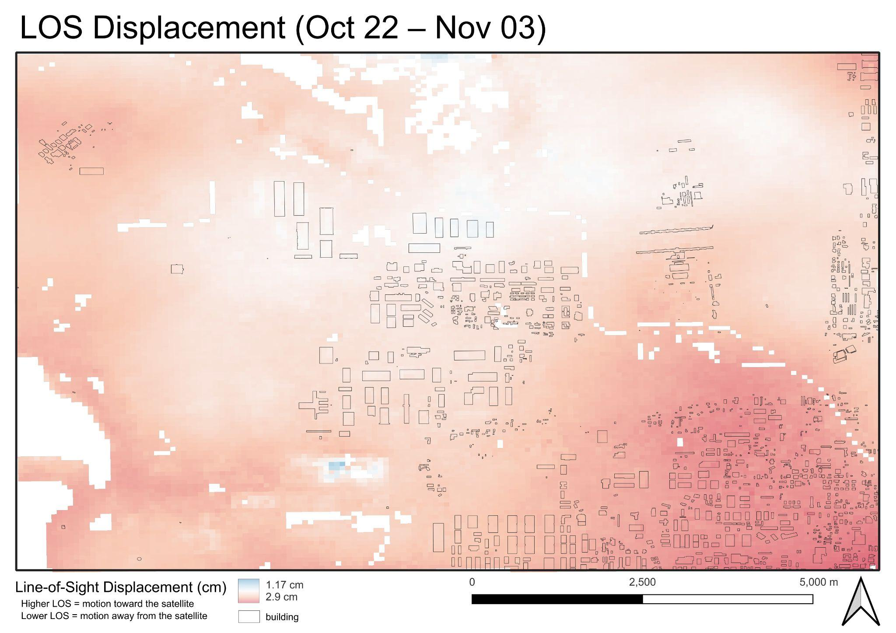
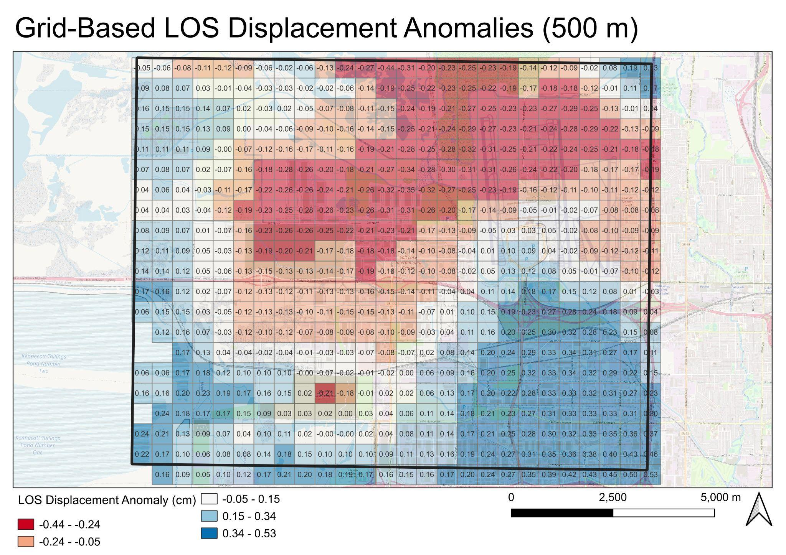

GEOG 6130 · Advanced Active Remote Sensing · Fall 2025
Short-Term InSAR Displacement and Surface Change Around the Salt Lake City Airport
Using Sentinel-1 radar imagery to distinguish short-term atmospheric effects from longer-term changes associated with airport and industrial development.
01 / Research question
Can radar detect movement or surface change?
The project investigated whether short-term ground displacement or surface modifications could be detected near Salt Lake City International Airport and the surrounding northwest industrial corridor. Airport infrastructure and industrial sites can experience both engineered changes and potential ground motion, making it important to distinguish physical changes from noise in satellite radar observations.
02 / Data and methods
Sentinel-1 SAR analysis
The analysis used Sentinel-1 interferometric synthetic aperture radar (InSAR) products, including HyP3 line-of-sight (LOS) displacement, coherence, and vertically transmitted/vertically received (VV) backscatter change. OpenStreetMap roads and buildings provided geographic context.
- Import the HyP3 LOS raster and convert displacement values from meters to centimeters.
- Mask pixels with coherence below 0.3 to filter lower-quality observations.
- Calculate VV backscatter differences between 2022 and 2024.
- Create a 500-meter Universal Transverse Mercator (UTM) grid and summarize mean LOS per cell.
- Subtract the scene-wide mean to calculate grid-based LOS anomalies.
- Overlay OpenStreetMap roads and buildings to interpret spatial patterns.
03 / Findings
Four views of surface change
These figures are reproduced from the Fall 2025 final project report. They show why coherence, displacement, and backscatter need to be interpreted together.




04 / Interpretation
Surface modification, not confirmed deformation
The short interferometric observation interval was strongly affected by atmospheric phase delay. Low-coherence regions also limited where LOS estimates could be interpreted reliably. In contrast, the 2022–2024 VV backscatter comparison highlighted changes associated with construction and redevelopment.
Limitations and next steps
A longer series of interferograms, multiple acquisition dates and baselines, and independent validation using Global Navigation Satellite System (GNSS) or LiDAR measurements would improve confidence in long-term displacement trends.
05 / MSGIS portfolio skills
Skills demonstrated
This project demonstrates several competencies from the MSGIS handbook through its documented analysis and communication.